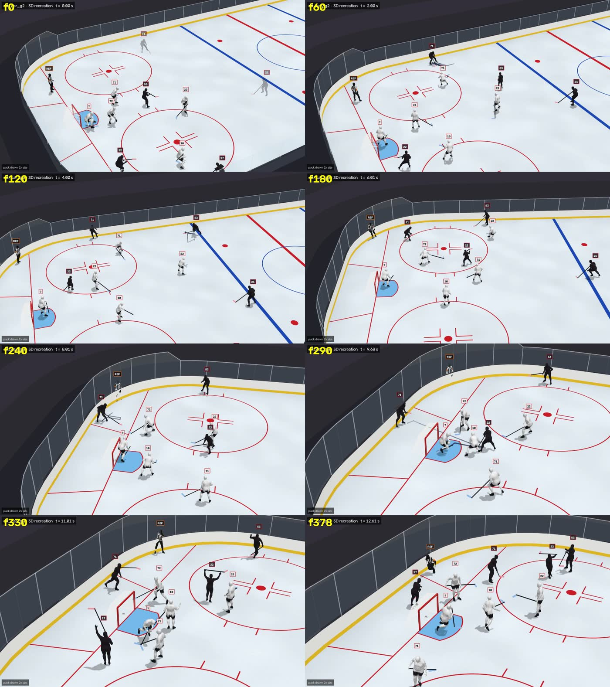
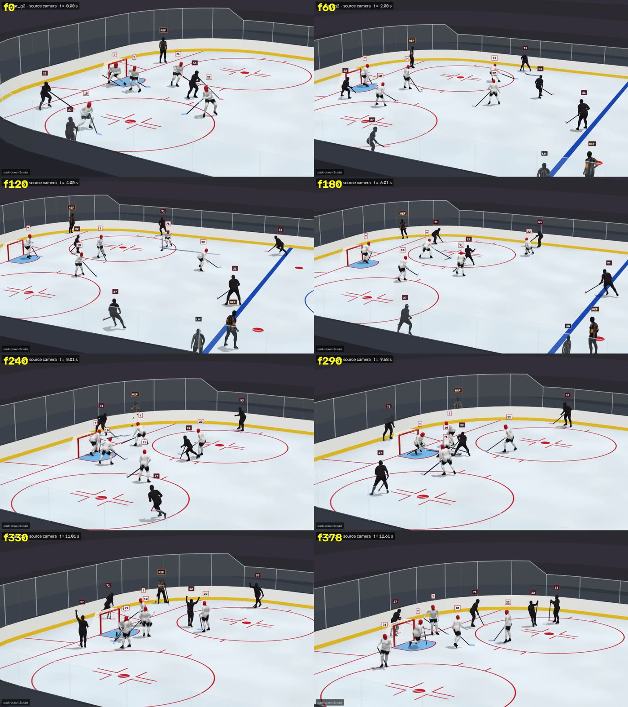
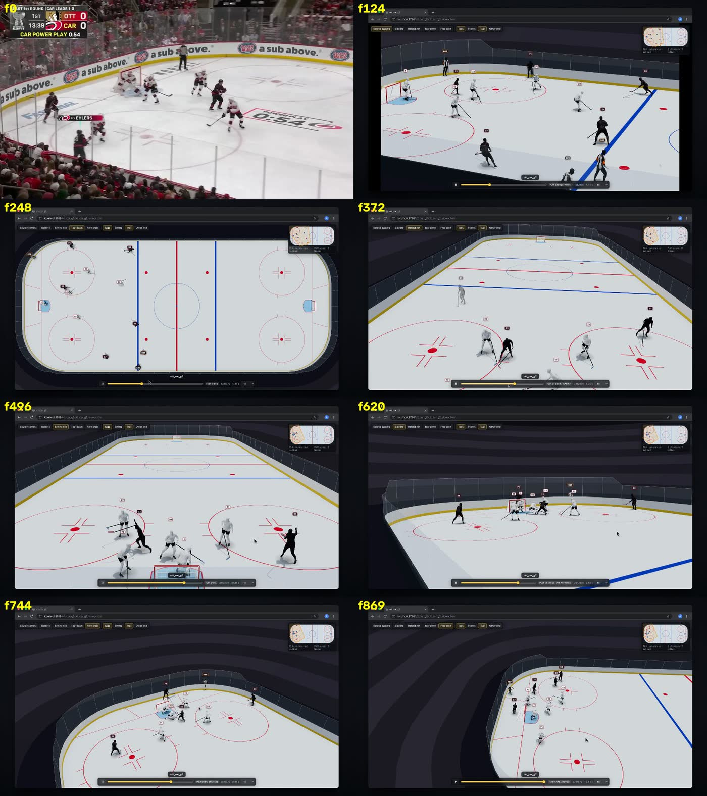
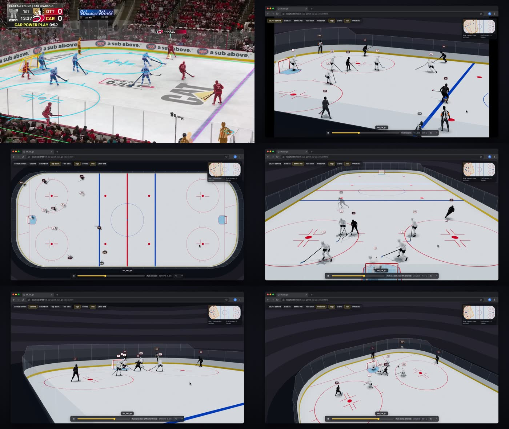
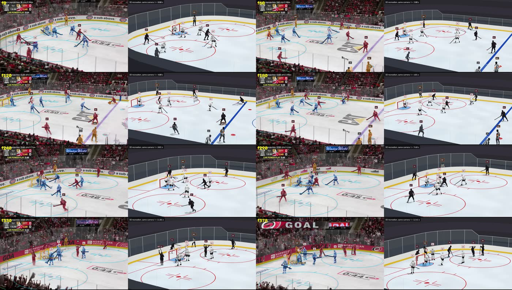
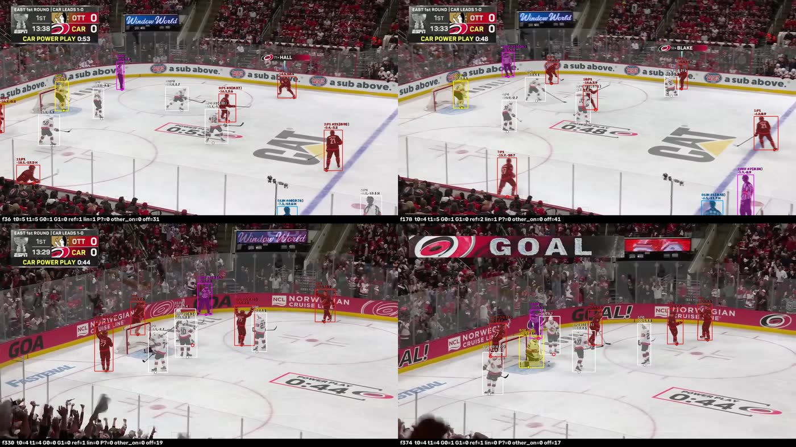
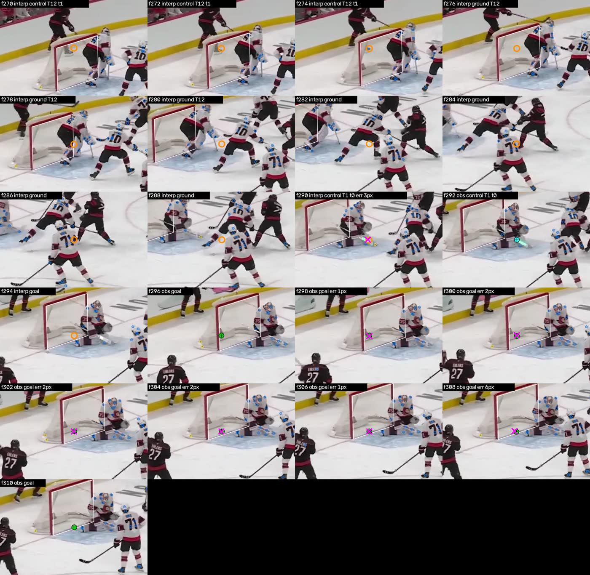
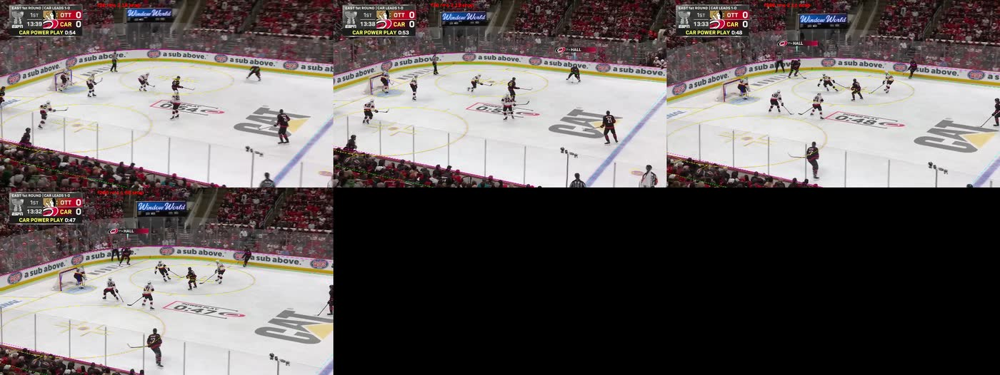
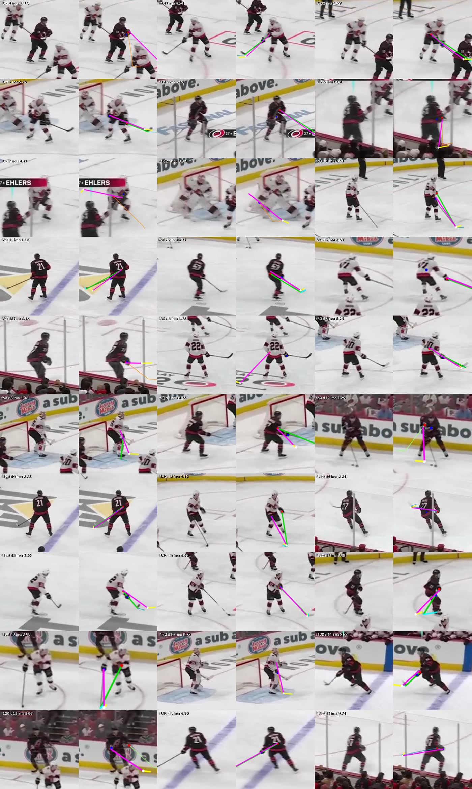
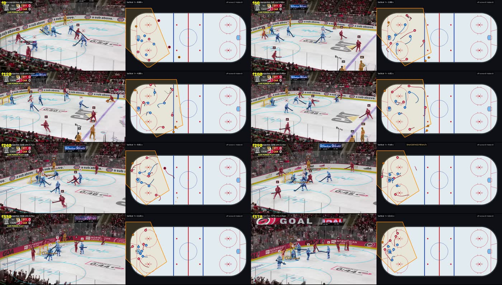

HockeyPosted on X
Hockey – ott_car_g2
Hockey 3D · clip ott_car_g2 · Outputs made Nov 4, 2026
Source footage is NHL broadcast video; all rights belong to the NHL and its broadcast partners. Shown here only as reference for a non-commercial research demo.
Source vs recreation
Interactive 3D viewer
More renders
QA contact sheets (10)

sheet_3d.jpg
sheet_3d_broadcast.jpg
sheet_browser_tour.jpg
sheet_browser_tour_stills.jpg
sheet_compare.jpg
sheet_detections.jpg
sheet_puck_goal_f270_310.jpg
sheet_rink_reprojection.jpg
sheet_sticks.jpg
sheet_tactical.jpgOther files in the output folder (3, not published)
ott_car_g2/ott_car_g2_qc.json | QC / metrics JSON | 24 KB | Nov 4, 2026 04:47 |
ott_car_g2/ott_car_g2_timing.json | QC / metrics JSON | 576 B | Nov 4, 2026 04:48 |
ott_car_g2/ott_car_g2_play.pkl | Pickled PlayData | 20.5 MB | Nov 4, 2026 04:44 |